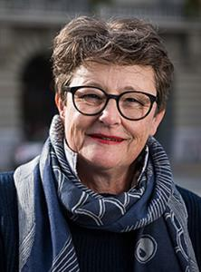
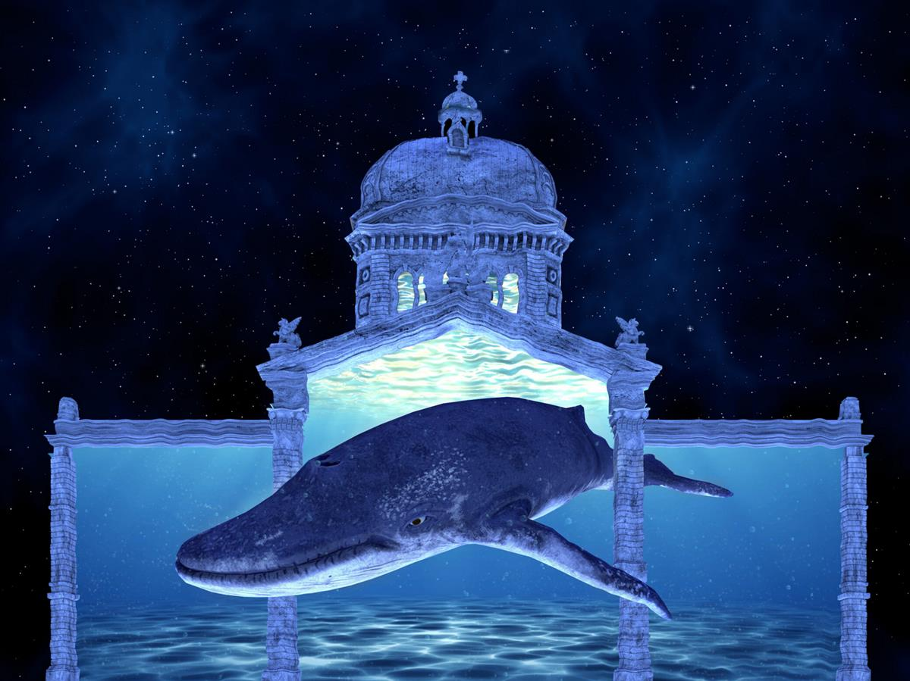
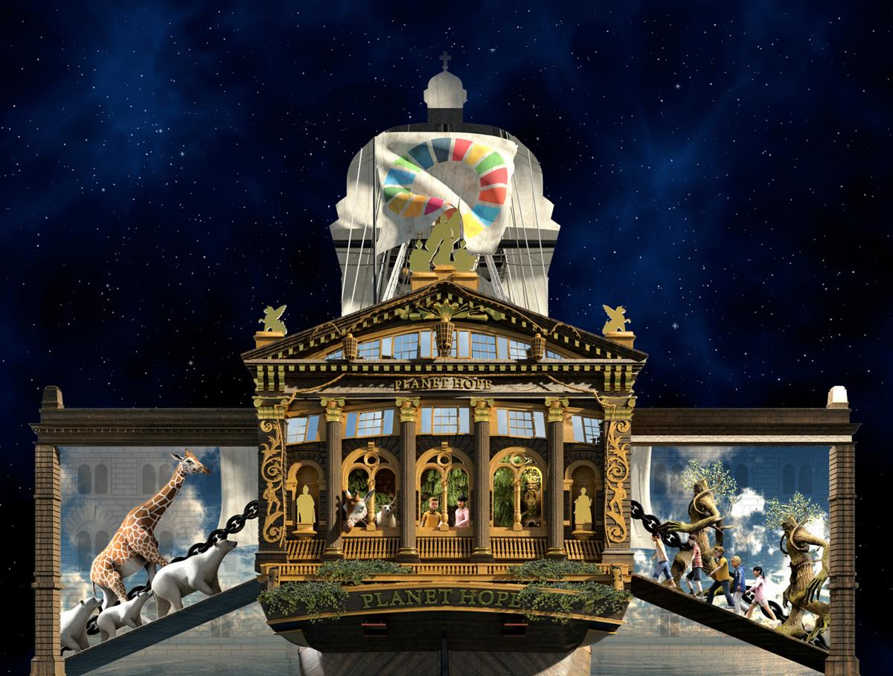
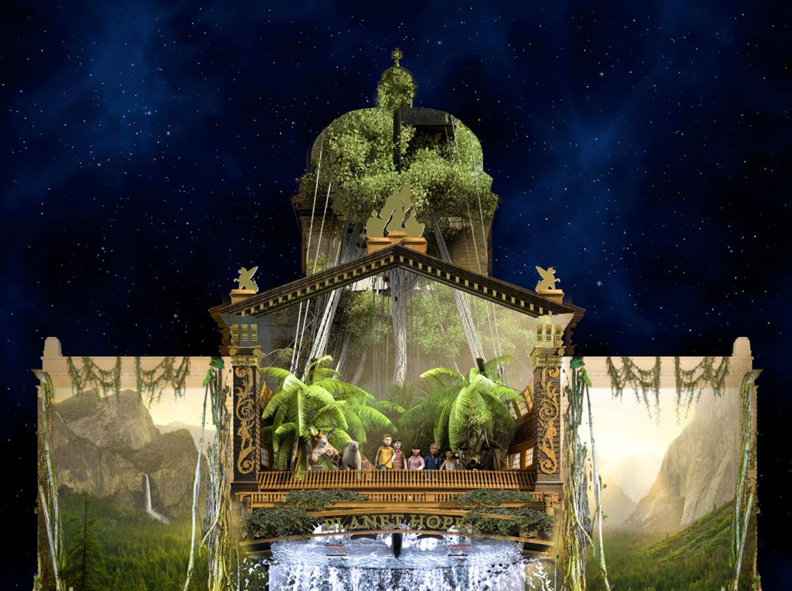
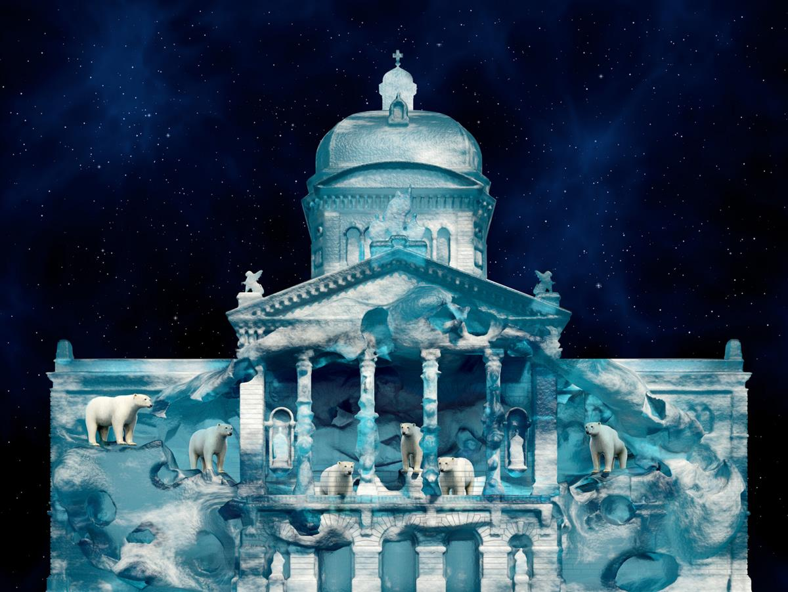
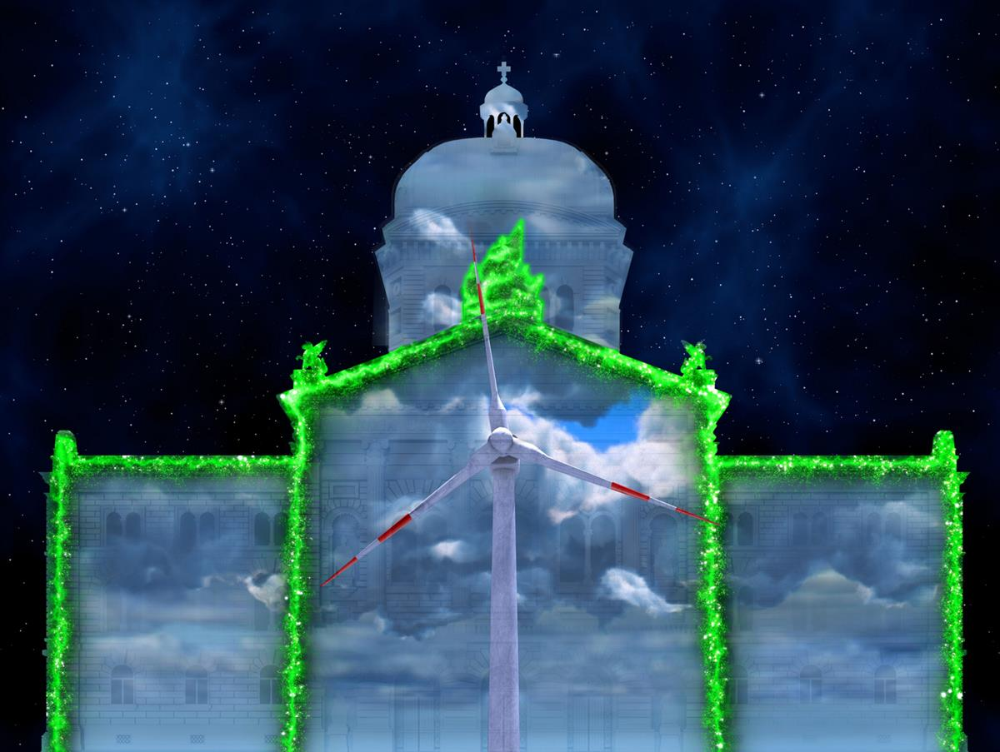

On October 16th, the Swiss parliament building will become a ship whose resemblance to Noah’s Ark is by no means coincidental: “Planet Hope” sets sail and glides away to the adventure of Earth.
The ark – the word comes from the Latin “arca”, which roughly means chest or crate – is a gigantic vehicle which, according to the Bible, saved forefather Noah, his family and all known pairs of animals from the Flood. It is a ship of salvation, a ship of hope that will not sink in the storm of elements destroying the world.
“Planet Hope” also feels the power of nature and the forces that destroy it: the stormy force of the elements, the melting of the icebergs, and the ship fights the plastic waste in the oceans. An ark is being built on the Bundeshaus, the façade turns into an iceberg, and a tidal wave devours everything. A humpback whale swims over the walls.
The ship sails from continent to continent; political borders dissolve. It encounters Nobel Peace Prize laureates, a festival of cultures is celebrated – and we all land unscathed and happy on the Swiss parliament building.
The highest form of hope is the overcoming of despair, said Albert Camus.
Starlight Events GmbH

Brigitte Roux
Producer and organiser Rendez-vous Bundesplatz
From 16 October to 21 November 2020.
Every night at 19.00, 19.45 and 20.30. On Thursdays, Fridays and Saturdays, additional performance at 21.15.
Duration: about 30 minutes.
Free-of-charge.
SOURCE: RENEDZ-VOUS BUNDESPLATZ




